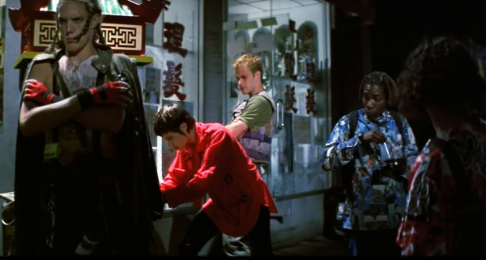
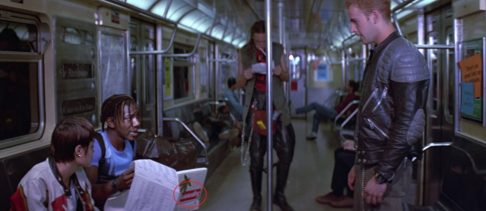
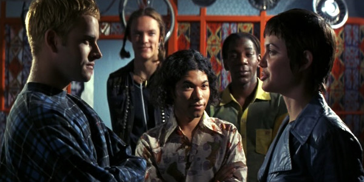

We're hackers. We hack because we want to grow as people. We hack because we want to learn. We don't hack banks, governments, or haters. We hack to learn how to build websites.
We're Toucans-06, a team of beginning web development learners brought together by the Chingu Voyage 3 Cohort. We don't know one another's faces. We don't know voices. All we know is that we've come together to complete a project together.
Six weeks ago, we held our first meeting in our Slack channel. Today, we present to the world our minimum viable product (MVP).
To be clear, our project isn't feature complete. We finished what we could in six weeks. For some of us, this is the first remote development project we've worked on. So, it's astounding that we were successful in all stages of the project management process!
The project is not very complex, in and of itself. There are some more complex elements requiring JavaScript and complicated CSS positioning. However, the more complicated part of the learning experience was building it together as a team and overcoming the obstacles it takes for a team to come together to complete it.
Our Project Goals and Process
We set out to clone the Elevation Web front page. Elevation Web is, according to that front page, a web development agency that focuses on building nonprofit organization websites. We didn't settle for cloning a bot landing page. We didn't want to clone a random business site. Rather, we wanted something ... well ... more meaningful. Something that more closely matches our goals of developing websites for those we care most about.
Elevationweb.org is built using WordPress. It's tempting to clone the site using WordPress since we'd have access to all of the plugins, themes, and page builders available for WordPress. However, we wanted to challenge ourselves by only using HTML5, CSS3, and vanilla JavaScript (where possible).
Our contribution process was based on freeCodeCamp's contribution process.
We initially divided the site into three main sections: header, main, and footer. We assigned these sections between the three of us. Our fourth team member informed us that they had started a new job and wouldn't be able to participate in the team. Each of us divided our sections into smaller sections. Basically, we broke the front page down into its most basic parts so we could build it back up again.
We had two initial meetings to iron out the details and the rest of the time was spent coding and reviewing each other's code. We used GitHub's project kanban board interface to manage the project.
Project Details
There are a few differences between our MVP and the original site. One main difference is that we only have the front page. Other differences are in the styling and that we didn't use WordPress plugins and themes.
We have some basic JavaScript to randomly select a video background, scroll smoothly to the blog section when the chevron-down icon () is clicked, and to detect when the mouse scrolls in order to change the styling of the fixed header. We also have some jQuery.
The video background in the header is done with the following snippet of code. This randomly selects a video and then inserts the background HTML code into the page:
Each video file is named video[n].mp4 where n is either 1, 2, or 3. A new video is used as the background for the header each time the page is reloaded or refreshed. This code also updates the video poster for systems that take longer to download and play the video.
We are using CSS Flexbox and Grid as well.
We evaluated our project with the following validators in order to find and fix coding mistakes and make sure we're coding with best practices:
- w3.org HTML Validator
- w3.org CSS3 Validator
- CSSLint.net
- WebAIM WAVE Accessbility Validator
- WebAIM Color Contrast Checker
Since we were making a clone, we wanted to stay somewhat true to the original site in the overall design, colors, placement of sections and page items, etc... This means many of the color contrast errors we have are also present in the original site. We left these in the code, but note that if we were designing and maintaining the site ourselves, we'd fix the color contrast errors so everyone would be able to see all of the elements on the page. That said, our code leads to far fewer overall accessiblity errors than the original site.
Takeaways and Conclusion
All of us attempted tasks that were new or difficult for us, whether that was new JavaScript, using pure CSS instead of Bootstrap, or writing complex HTML markup. I think it helps to know that one's team members have one's back in case one gets stuck, so attempting to do something new and difficult is less scary.
We all were cordial and compassionate to one another both with code reviews and as life issues came along to steal time and energy from the project. This allayed fears some of us had about teams focusing on the strongest, most active members while leaving the rest behind.
Overall, the Chingu idea of getting people into teams early on is a great idea! We learned a lot about project management, GitHub workflows using feature branches, HTML, CSS, and JavaScript.